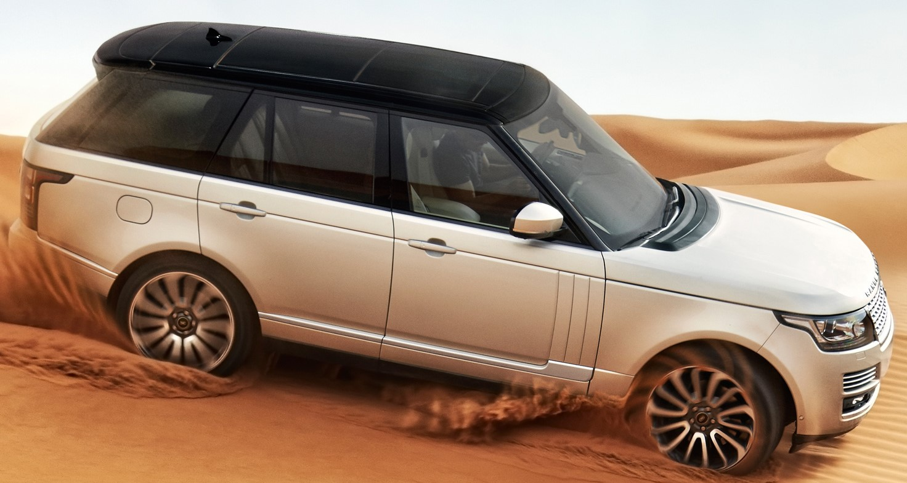
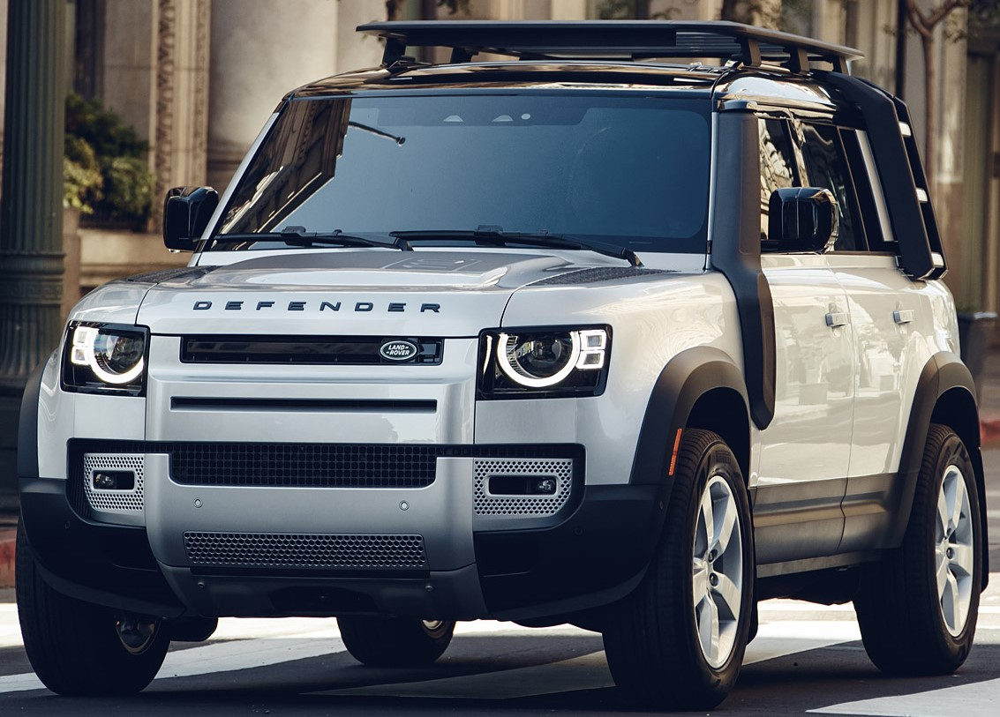
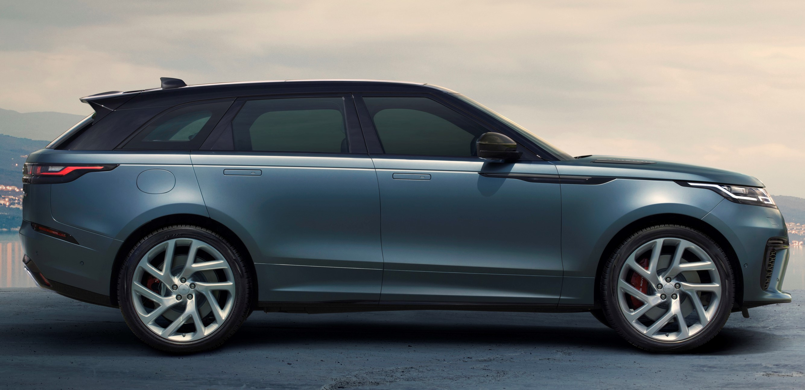
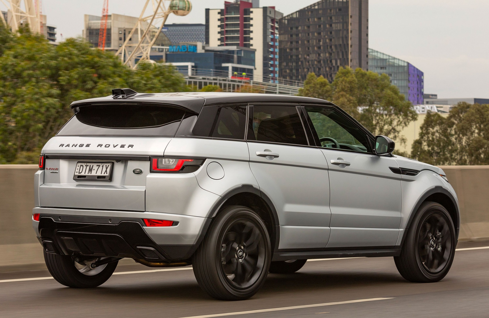

Range Rover AutoBiography SWB
AutoBiography Short Wheel Based has a Sport Utility body type.It has a overall length is 196.9 and overall height is 73.6.It has a privacy glass and power windows.It come with Panoramic roof and sun/moon roof and remaining optional roof's.It has a Towing facility and all Convenience & Comfort Facilites.The passenger Capacity in SWB is 5 persons.It also had a very great Entertainment Features.The seats are offered with many varities and it has Navigation & Communication System.The SWB has An safety rating of 5 out of 5.

Range Rover AutoBiography SWB
Land Rover Range Rover 5.0 SV Autobiography Petrol LWB is the top model in the Range Rover lineup and the price of Range Rover top model is ₹ 4.05 Crore. This 5.0 SV Autobiography Petrol LWB variant comes with an engine putting out 503 bhp @ 6000 rpm and 625 Nm @ 2500 rpm of max power and max torque respectively. Land Rover Range Rover 5.0 SV Autobiography Petrol LWB is available in transmission and offered in 13 colours: Narvik Black, Spectral British Racing Green Metallic, Mescalito Black Metallic, Santorini Black Metallic, Balmoral Blue Metallic, Rosello Red Metallic, Carpathian Grey Metallic, Scafell Grey Metallic, Spectral Racing Red Metallic, Byron Blue Metallic, Rio Gold Metallic, Madagascar Orange Metallic and Fuji White.

Range Rover Sport
The Range Rover Sport is powered by a supercharged 5.0-litre Supercharged all-aluminium Jaguar engine AJ-V8 producing 510 hp (380 kW) and 550 N⋅m (406 lbf⋅ft). A naturally aspirated 4.4-litre variant produces 300 hp (224 kW) and 425 N⋅m (313 lb⋅ft) and has been adapted by Land Rover with a slightly greater capacity and increased torque. Both petrol engines have been designed with a sump and oil pick-up system to allow for operation at extreme angles. Due to lack of popularity, the naturally aspirated power plant was omitted from the UK market in 2007. The advanced 2.7-litre turbodiesel TDV6 is an adaptation of the PSA/Ford development and produces 190 hp (142 kW) and 440 N⋅m (325 lbf⋅ft) in Land Rover guise. It features a compacted graphite iron block and aluminium cylinder head with fast switching piezo crystal injectors. Debuting in both the Sport and the flagship Range Rover in 2007 was the 3.6-litre twin turbodiesel TDV8.

Range Rover Defender
Land Rover Defender Price: It is priced from Rs 73.98 lakh to Rs 89.63 lakh (ex-showroom).Land Rover Defender Variants: The SUV comes in both 90 and 110 body styles in India. It is offered in a total of five variants in both body styles: Base, S, SE, HSE, and First Edition.Land Rover Defender Seating Capacity: While the Defender 90 can seat up to six people, the Defender 110 gets a total of seven seats.Land Rover Defender Powertrain: Land Rover offers the Defender with a 2.0-litre turbo-petrol engine that puts out 300PS and 400Nm. It gets an 8-speed automatic gearbox and Land Rover’s AWD system.Land Rover Defender Features: The Defender is equipped with a 10-inch touchscreen infotainment system with navigation as well as Android Auto and Apple CarPlay, 6-speaker audio system, a 12.3-inch digital instrument cluster, and tyre pressure monitoring system.Land Rover Defender Safety: It gets safety features such as electronic traction control, cornering braking control, and dynamic stability control.

Range Rover Velar
The Range Rover Velar ushers in a new design language for Land Rover that is influenced by Land Rover's previous design language that began with the Evoque and most recently was used in the Range Rover Sport. The new design language features smoother lines on the body, and emphasises sportiness and on-road ability, but more important is the new interior design language that begins with the Velar, which will later spread to other Range Rover models. The interior of the Velar is influenced by that of the I-Pace of 2018 and features 3 touchscreens, which control most of the interior features of the Velar. The cockpit of the Velar is more driver-focused and the seating position is lower than any other Land Rover before, as sportiness and on-road performance are top priorities.

Range Rover Evoque
The Range Rover Evoque is Land Rover's 5-passenger luxury compact SUV, offered in 5-Door and Convertible body styles. The Range Rover Evoque is powered by a 237-hp (or optional 286-hp) 2.0-liter turbocharged four-cylinder engine with Intelligent Stop/Start. It is mated to a nine-speed automatic transmission with manual mode and paddle shifters, while Land Rover's unique "Terrain Response" system enhances all-surface, all-weather capability. Trim-dependent standard features include: a gesture-controlled power tailgate, panoramic glass roof, 20-inch aluminum wheels, adaptive LED headlights, heated/ventilated front seats, leather upholstery, dual-zone automatic climate control, passive entry/start, HD/satellite radio and Bluetooth wireless phone connectivity/audio streaming, as well as InControl Touch with navigation and a 10.2-inch high resolution touchscreen; InControl Apps smartphone integration is now found on all trims. Standard safety equipment on every Range Rover Evoque includes anti-lock brakes with brake assist, electronic stability control with traction control and roll mitigation, front and rear parking aid sensors with rear camera, and InControl Remote & Protect, along with seven airbags.

Range Rover Evoque
The Land Rover Discovery Sport (internal code L550) is a compact luxury crossover SUV produced by British automotive company Jaguar Land Rover under their Land Rover marqueand since 2017 their best-selling model.Introduced in late 2014,it replaces the Freelander in a revised Land Rover range of vehicles, with Discovery joining Range Rover as a sub-brand.Contrary to its predecessor, the slightly larger car is also available in a seven seat layout.The Discovery Sport is based on the JLR D8/LR-MS platform, customised for off-road applications, and is powered by a range of four cylinder petrol and diesel engines.It is the first Discovery introduced with a unibody structure.The Discovery Sport was initially powered by the same engine range that features in the outgoing Freelander 2 model for the first model year, the Ford EcoBoost four cylinder 2.0-litre turbocharged petrol engine producing 240 PS (180 kW; 240 hp) (the only engine option for North America) and the Ford Duratorq four cylinder 2.2-litre turbocharged diesel engine, producing either 150 PS (110 kW; 150 hp) or 190 PS (140 kW; 190 hp)

ADDRESS:
Besides Cyber Tower,Hyderabad,India
contact@email.com
+91 82222 55555
Mon-Sat 9:00 Am to 6:00 Pm